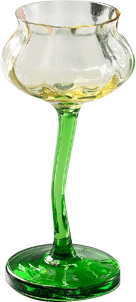

<!DOCTYPE html>
<html>
<head>
<meta charset="UTF-8">
<title>Insert title here</title>
<Script src="https://ajax.googleapis.com/ajax/libs/jquery/3.6.3/jquery.min.js"></script>

<Style>
	ul, li{ list-style-type :none ; margin:0; padding:0;}
	li{ float:left; width:100px; height:100px;margin:5px; padding:5px; border:1px solid black;}
	li>img{height:100px; width:100px;}
	
</Style>

<script>
	$(function(){
		//before() : 선택자 이전에 객체 추가
		$('#img').before("<li id='s'></>");
		// insert before() 선택자 이전에 객체 추가 
		$("<li></li>").insertBefore("#img");
		
		//append() : 선택자의 마지막 객체로 추가 선택자.append(내용)
				
		//appendTo() : 내용.appendTo(선택자)
		$('ul').append('<li></li>');
		$('<li></li>').appendTo('ul');
		//내용
		// setInterval(function(){
		//		$("li:first").appendTo('ul');	
		// },300);
		
		// prepend() 앞에 객체를 추가 선택자.prepend(내용);
		// prependTo() 객체를 선택자 앞에 추가 내용.prepend(객체);
		
		// clone(): 선택자를 복제 - 한번만 가능
		var imgClone = $("#img").clone();
		imgClone.attr("id","img2");
		// attr() : 테그의 속성을 얻어오거나 속성을 변경할때 속성과 속성값이 존재
		// prop() : 태그의 속성을 얻어오거나 속성을 변경할때 속성만 존재할때
		$('ul').prepend(imgClone);
		
		// empty() : 선택자 내용 지우기
		$("#img").empty();
		//remove() : 선택자와 내용 지우기
		$("#s").remove();
		// obj.replaceAll(sel)  객체를 선택자로 치환
		// sel.replaceWith(obj) 선택자의 객체를 다른객체로 치환 
		$ ('#img').replaceWith("<li>replaceWith<hr/>내용바꾸기</li>");
		$ ("<li>replaceAll<hr/>내용바꾸기</li>").replaceAll('#img2');
		
		
		
	})
</script>
</head>
<body>
	<ul>
		<li id="img"></li>
		
	</ul>
</body>
</html>